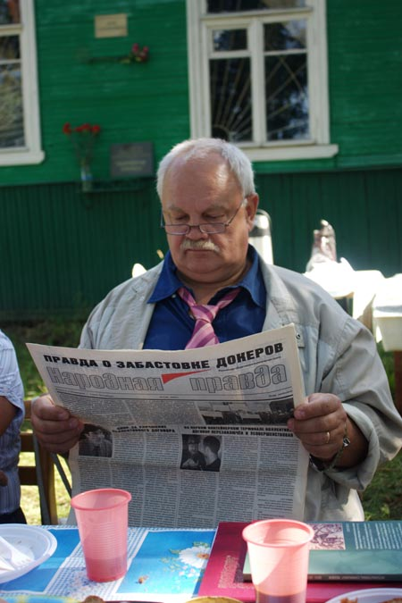

Герасимов Иван Михайлович, первый заместитель главного редактора Российской общественно-политической газеты «Народная правда».
История газеты «Народная правда» делится на два больших периода — до октября 1993-го года и после октября 1993-го. И если взять газеты первого периода — то, конечно, там они более профессионально сделаны. Был мощный коллектив редакции, в том числе пять корректоров было, поэтому всяких косяков там было меньше, была корреспондентская сеть практически по всему СНГ, было много интересных репортажей. Газета была бодрая, энергичная. Здесь проявилась и личность тогдашнего главного редактора — Виктора Георгиевича Долгова, и немалую роль сыграл эффект большого коллектива. Виден размах, масштаб работы. Но вот что характерно. Не в каждом номере, но сплошь и рядом — я перебирал номера старые — заголовки: «Власть должна уйти», «Сегодня хороним Горбачева, завтра — Ельцина», «Ельцина — на плаху», «Под нож», «Зреют гроздья народного гнева» — и из номера в номер эта тема кочевала. Но как-то не очень проглядывался субъект этих вот больших перемен, которыми грозила газета. Кто будет этим заниматься? Как-то подразумевалось: патриоты, русские люди поднимутся, армия, ещё кто-то. Но, как показала практика, та же армия, как ни унижай офицеров, без связи с революционным народом будет только разлагаться, но каких-либо выступлений ждать от нее бесполезно. От ругани в адрес «демократов» и Ельцина до того, чтобы организоваться и выступить, рискуя жизнью, рискуя карьерой — дистанция огромного размера.
Ставку здесь надо делать на тех, кто наиболее полно и до конца заинтересован в кардинальных изменениях в обществе, ликвидации капитализма, переходе к социализму и построении полного коммунизма — то есть на рабочий класс. И коммунист, по определению, — тот, кто несет научный социализм в рабочее движение. Обучает рабочих, агитирует, организует. Как это говорили немецкие товарищи, — штудирен, пропагандирен, организирен.
Тем не менее и та, «ранняя» «Народная правда» публиковала материалы по рабочему движению, которые, пожалуй, не публиковала ни одна другая оппозиционная газета. Вот номер 20 за май 1992 года. Целая полоса отведена под выступление токаря-расточника завода «Красное Сормово» председателя Российского исполнительного комитета Советов рабочих Дмитрия Васильевича Игошина «Власть будут брать наши советы». Кроме нас никто, в общем-то, так не выступал хотя и мы маловато в то время уделяли внимания таким вещам, «Народная правда» была практически единственной, кто эти вопросы широко поднимал.
Далее. В 38-м номере за тот же 92-й год большой материал «Как заключить коллективный договор». Были недовольные — ну, что вы тут даете, экономические требования, почитайте, что Владимир Ильич писал в работе «Что делать?» про экономизм. Но коллективный договор — внутренний закон предприятия. Разрабатывать, заключать и отстаивать коллективные договоры — это такая привычка, которая позволит рабочим колоссально вырасти и придвинуться к задачам непосредственного взятия власти, непосредственного управления страной. И не взойдя на эту ступень, к большим задачам не приблизиться. Надо сказать, что и мы осознали значение коллективных договоров в полной мере только к середине 90-х годов.
Далее. Была опубликована в 50-м номере за декабрь 1092-го года Экономическая программа Советского правительства. Программа правильная, но некоторые акценты в ней смещены. Вот политические основы выхода из кризиса: «некоторые экономисты ввели моду говорить «надо ввести государственный капитализм, государственно-корпоративную экономику… но нам нужна плановая экономика». С одной стороны, возразить против этого невозможно. Но все-таки это, на мой взгляд, рассуждение мудреца, сидящего на холме. Это рассуждение абстрактное. Сейчас мы ловим буквально хоть какие-то зерна позитивные вот этого госкапитализма в общем развале, случаи поднятия производства. Потому что если не будет производства, не будет заводов работающих, не будет трудовых коллективов — не будет рабочего движения, не будет перспектив и у России в целом, тем более — и перспектив построения социализма в России. Что такое госкапитализм? Это капитализм не частный, не частного капиталиста, а собственность капиталистического государства, класса капиталистов. Конечно же это прогрессивнее, чем частный капитализм. Поэтому эту линию госкапиталистическую сейчас мы в определенной мере поддерживаем.
В этой Программе есть и такие вещи, из-за которых мы решили и на сайт эту программу не давать. «Требования повышения заработной платы для той или иной категории трудящихся в условиях падения производства не могут дать сколько-нибудь заметного улучшения материального положения». Такие мысли были озвучены ещё господином Прудоном, с обширной цитаты из книги которого «Философия нищеты» начинается пятая глава «Нищеты философии» Карла Маркса. Какой смысл бороться за повышение зарплаты, если вслед за этим вырастут цены и положение трудящихся лишь усугубится? — вопрошает Прудон. И Маркс почти всю пятую главу разбирает ненаучную позицию Прудона и доказывает, что единственное правильное в ней — то, что дважды два — четыре. Борьба за зарплату выходит сейчас почти на первое место, впереди этой борьбы может быть лишь борьба за сохранение производства и трудовых коллективов, против увольнений, сокращений и так далее. Но маленькие зарплаты сами по себе уничтожают производство, разваливают трудовые коллективы. Без увеличения зарплат нет выхода из тупика. И там, где людям удалось добиться более-менее приемлемых зарплат — докерам, авиадиспетчерам — там и наиболее передовые трудовые коллективы России, где много молодежи.
После 1993 года деятельность нашей газеты сильно затруднилась. Несколько лет она выходила только в виде совместных выпусков с газетой «За рабочее дело». Но зато эти выпуски были почти целиком посвящены рабочему движению.
Крупным эпизодом в жизни нашей газеты была борьба за проект Трудового кодекса, разработанный Фондом Рабочей Академии и, главным образом, товарищами Федотовым и Поповым. У этого проекта кодекса имеется отдельная история, которую потом, возможно, дети в школах будут изучать, как существенный элемент истории рабочего движения России.
Сначала, в 1996 году в Российской газете был напечатан анонимный, но крайне гнусный проект Трудового кодекса. Против него поднялась волна возмущения, в том числе — и в Госдуме, но альтернативы позитивной не было.
Константин Васильевич Федотов этим обеспокоился и вместе с Михаилом Васильевичем Поповым они разработали альтернативный проект. На заседании Российского комитета рабочих депутат Государственной Думы от КПРФ, член Совета рабочих Москвы Корсаков поклялся этот проект внести. Но чего-то все не вносил и не вносил. Пришлось в газете «За рабочее дело» дать жесткий материал с карикатурой и злобными стихами. После этой публикации началось шевеление в Госдуме, товарищ Григорьев, от РКРП депутат, а также Ионов и Шандыбин, ну и Корсаков начали Трудовой кодекс вносить. Но они его «недонесли» — лишь занесли в Совет думы, где он и остался. Потом выяснилось, что официально он не внесен. Внес его, уже под конец своей деятельности в Думе того созыва депутат Авалиани Теймураз Георгиевич.
В дальнейшем была разработана вторая редакция этого проекта с учетом поступивших предложений. Эту редакцию внес в Думу уже депутат следующего созыва товарищ Шеин как проект Авалиани-Шеина, а затем с учетом предложений боевых профсоюзов в Думе появился наиболее прогрессивный проект Фонда Рабочей Академии, внесенный депутатом Шеиным.
Какой вклад здесь внесла «Народная правда»? Во-первых, она печатала материалы, освещавшие борьбу за Трудовой кодекс. Во-вторых, и самое главное, она напечатала полностью наш проект Трудового кодекса. Тиражом 10 000 экземпляров. Трудовой кодекс — это, по-существу, брошюра. Для брошюры это тираж колоссальный. Эта публикация сыграла в дальнейшем большую роль.
Основную лямку по Трудовому кодексу тянула газета «За рабочее дело». Но в номере 1 за 2000 год «Народной правды», изданной на средства из избирательного фонда кандидата в Государственную Думу Т.Г.Авалиани, был помещён дайджест лучших материалов по трудовому кодексу. Тиражом 50 000 экземпляров!
Выступления нашей газеты, несомненно, сыграли свою роль в том, что при голосовании в Думе наш проект занял второе место, набрав 189 голосов, тогда как для его принятия необходимо было 226 голосов. Позже на голосование ставились поправки к принятому Трудовому кодексу, которые, в случае их принятия, подтянули бы принятый ТК до уровня нашего проекта. Эти поправки набрали 222 голоса, недотянув лишь 4 голоса до принятия. Разумеется, без мощной информационной поддержки достичь таких результатов было невозможно.
Сплочение в ходе борьбы за Трудовой кодекс боевых профсоюзов вылилось в попытку создания политической партии трудящихся — Российской партии труда. Большую часть работы по информационной поддержке этого движения также взяла на себя «Народная правда». Фактически, она была главной партийной газетой.
Крупным событием в истории современного российского рабочего движения стала забастовка в трех стивидорных компаниях морского порта Петербурга в 2005 году. «Народная правда» выпустила номер, целиком посвященный этому событию, с великолепным фельетоном Владимира Сергеевича Бушина. Кроме того, на всем протяжении коллективного трудового спора его ход освещался в спецвыпусках «Докер» газеты «За рабочее дело». Как признала сама администрация стивидорных компаний, в информационной войне в коллективе порта она потерпела поражение. Что, в частности, и предопределило победу докеров.
Было опубликовано в «Народной правде» и интервью с президентом Федерального профсоюза авиадиспетчеров России Сергеем Анатольевичем Ковалевым, где он рассказал о достаточно изобретательных методах борьбы авиадиспетчеров, которым забастовки запрещены.
Нельзя не упомянуть, что в 2000 году майский номер газеты о том, что есть лучшего в Ленинграде-Петербурге, был издан миллионным тиражом. Вывозили его (27 тонн) на двух КАМАЗах. Мне коллеги на кафедре говорили: да, миллионник — это миллионник. Заходишь в трамвай — только и видно по рядам, сплошь заголовок «Народная правда». Народ читает. И Яковлев тогда победил, во многом, благодаря нашей газете.
Надо сказать, что до 1993-го года оппозиционное коммунистическое движение выглядело достаточно мощным, как человек иногда внешне кажется здоровым. Но последующие события показали, что если «воду спустить», то «сухого остатка» там не так уж много. Но сейчас, судя по тому, что происходит на заседаниях Российского комитете рабочих, семинара по рабочему движению Федерации профсоюзов России и Фонда рабочей Академии, на ежегодных ленинских конференциях в Разливе, происходит подъем, причем на здоровой, добротной основе. На последней ленинской конференции в Разливе мы уже размышляли о том, что динамики надо выносить на улицу, поскольку стены Каменного павильона музейного комплекса «Шалаш» не могут вместить всех желающих, а докладчикам регламент сократили до 8 минут, так их было много. Видно, что научные силы и рабочее движение — они есть, они соединяются. Говорить о бурном росте пока рано, но тенденция в целом позитивная и, думаю, она будет нарастать. И роль нашей газеты в этих процессах немалая.
|
|
|